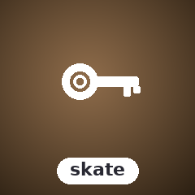

SugarSkate
In-memory key/value store with multiple backends

In-memory key/value store with a plugin architecture. Ships with Memory, SQLite, Badger (BadgerDB), and InMemory backends. Supports glob + prefix listing.
Install
composer require sugarcraft/sugar-skateQuickstart
use SugarCraft\Skate\Store;
$skate = new Store(); // SQLite files under ~/.config/skate
$skate->set('user:1', 'Alice');
$skate->set('user:2', 'Bob');
echo $skate->get('user:1'); // 'Alice'
echo $skate->get('missing', 'n/a'); // fallback: 'n/a'
// A key@db suffix routes to a named database
$skate->set('token@passwords', 'ghp_xxxx');
$skate->setWithTtl('session', 'abc', 60); // expires after 60 s
foreach ($skate->list('user:*') as $entry) { // glob patterns; yields Entry
echo "{$entry->key} => {$entry->value}\n";
}
$skate->listDatabases(); // ['default', 'passwords']What's in the box
SQLite storageOne SQLite file per named database under the data directory (
~/.config/skate by default); key@db picks the database.Glob and fuzzy listing
* / ? glob patterns, reverse order, keys-only or values-only modes, and fuzzyFilter().TTL supportExpire keys after a set time; expired entries are never returned.
Binary values and transactionsStore files as binary entries and group writes in a transaction.
Source & demos
- Source on GitHub
- Full README
- Runnable examples
- Port of charmbracelet/skate (Go upstream)
API
| Class | Method | Description |
|---|---|---|
| Store | __construct(?string $dataDir = null, string $defaultDb = 'default') | Key-value store over per-database SQLite files |
| Store | set(key, value, bool $binary = false, ?int $ttlSeconds = null) / setWithTtl(key, value, ttl) | Write a key; key@db routes to a named database |
| Store | get(key, fallback = '') / entry(key) | Read a value, or the full Entry |
| Store | list(?pattern, ?dbName, reverse, mode, delimiter) / fuzzyFilter(query) | Glob or fuzzy listing |
| Store | delete(key) / setFile(key, path) / getFile(key, path) | Delete; binary values from and to files |
| Store | listDatabases() / deleteDatabase(name) / transaction(dbName, callable) | Database management |
| Database | __construct(path, name) / get / set / delete / list / count / deleteMany / transaction | One SQLite database |
| Entry | key, value, binary, createdAt, modifiedAt, expiresAt / isExpired() | A stored value |